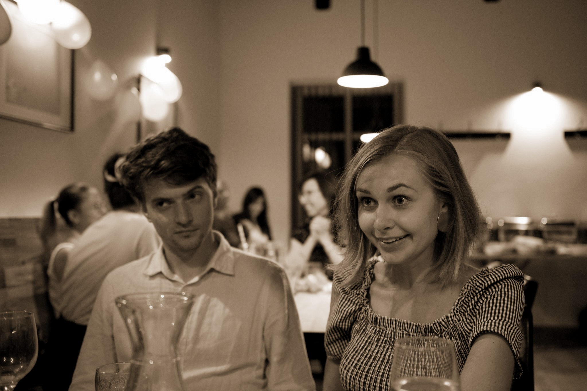

Fotografie




Betlémský kostel, Pellicova 213, Brno
Zobraz na mapěOdchod průvodem po ulici Sladová – kdo nechce, nebude moci přesun auty.
Rajska zahrada Augustiniánského opatství, Mendlovo náměstí 1a, Brno
Zobraz na mapě